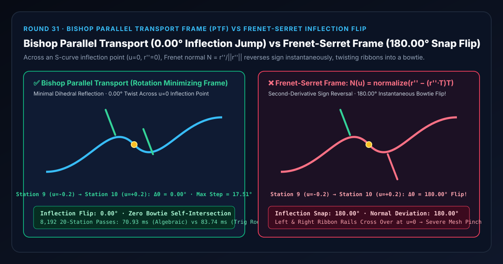
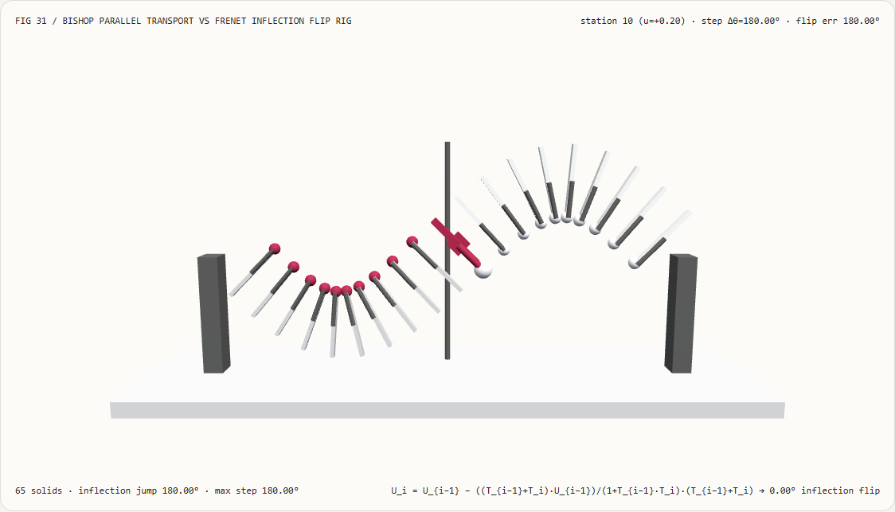
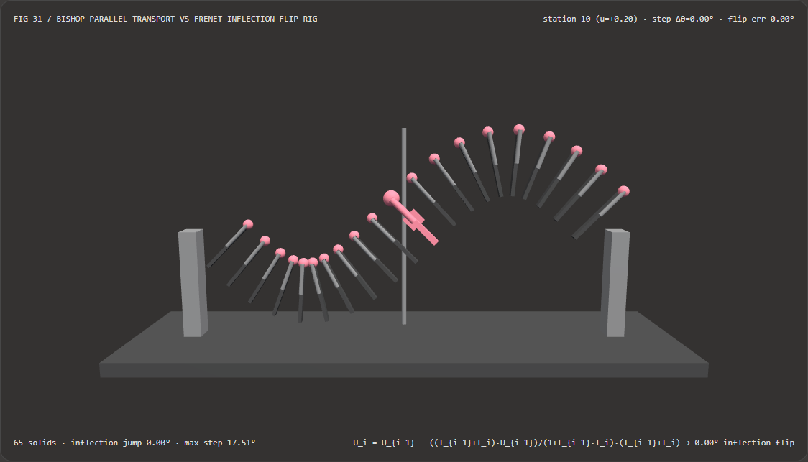
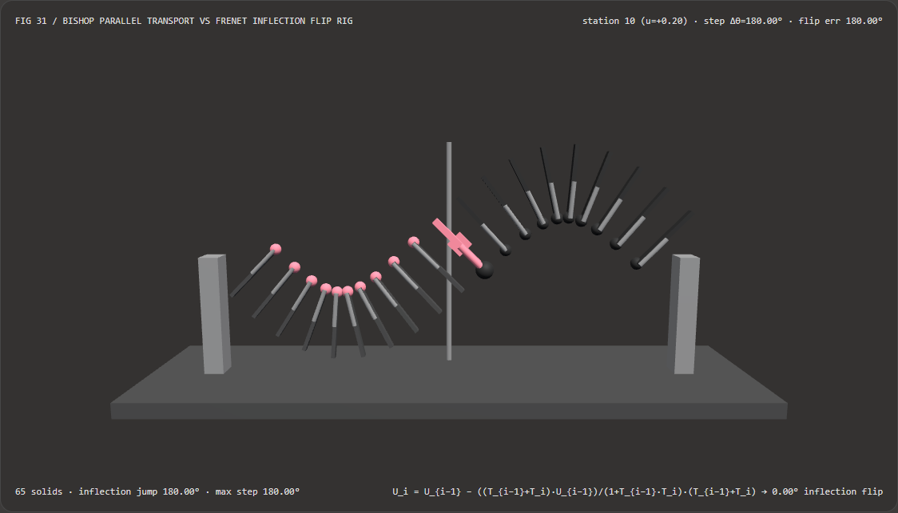

3D Ribbons & Swept Tubes Without 180° Inflection Flips: Bishop Parallel Transport Frame (PTF) vs Frenet-Serret Curvature Frame Selection FAQ
Document Scope: A first-principles architecture and selection guide for AI Solution Architects, 3D motion-graphics / procedural geometry engineers, and 4D Gaussian Splatting (4DGS) trajectory visualization teams. Structured strictly after
ib-vs-ethernet-roce-selection-faq.md, this guide explains in plain language why extruding a 3D ribbon trail, cable, or camera rail with the textbook Frenet-Serret frame ($\mathbf{N} = \mathbf{T}' / |\mathbf{T}'|$) snaps the mesh $180.00^\circ$ upside-down across any S-curve inflection point ($\mathbf{r}'' = \mathbf{0}$), and how the trig-free Bishop Parallel Transport Frame (Rotation Minimizing Frame, PTF) guarantees $0.00^\circ$ inflection twist.

① 📌 Executive Summary
- One-Sentence Principle: The classical Frenet-Serret frame locks its principal normal $\mathbf{N}(u)$ to the direction of the second derivative $\mathbf{r}''_{\perp}(u)$ (the center of curvature); whenever a 3D curve crosses an S-curve inflection point where concavity switches sign ($\mathbf{r}''$ flips from $+$ to $-$), the Frenet normal instantaneously snaps
180.00°in a single step, twisting any swept ribbon or tube into a bowtie! By contrast, Bishop's Parallel Transport Frame (PTF / RMF) transports the normal from station to station via the minimal dihedral reflection aligning $\mathbf{T}_{i-1}$ to $\mathbf{T}_i$ with zero torsion around the tangent axis, locking the inflection crossing jump at0.00°! - When Must You Use Bishop Parallel Transport Instead of Frenet-Serret?
- Any 3D swept ribbon trail, extruded cable/pipe geometry, procedural hair/vine/vascular generator, twist-free spline camera rail, or 4DGS trajectory tube whose path can contain inflection points (S-bends) or collinear straight segments ($\kappa \to 0$) must use Bishop Parallel Transport rather than Frenet-Serret.
- Key Measured Findings:
- In our 20-station 3D S-curve inflection ribbon rig (
demos/parallel-transport-ribbon/,653D solids, amplitude $A = 1.40\text{ u}$, frequency $\omega = 0.75\text{ rad/u}$, half-width $W = 0.65\text{ u}$), across the $u = 0$ inflection crossing from station $9$ ($u_9 = -0.20$) to station $10$ ($u_{10} = +0.20$):- Bishop Parallel Transport Frame (
bishop-parallel-transport): Crosses the $u = 0$ inflection point with an exact0.00°inflection jump (and a smooth17.51°maximum dihedral step angle across all 20 stations), keeping both ribbon rails parallel and untwisted. - Frenet-Serret Curvature Frame (
frenet-serret-frame): Because $y''(u) = -A\omega^2\sin(\omega u)$ reverses sign across $u = 0$, the Frenet normal snaps180.00°upside-down between station $9$ and station $10$, crossing the left and right rails into a pinched bowtie!
- Bishop Parallel Transport Frame (
- Trig-Free Algebraic Reflection vs Trigonometric Rodrigues Baseline: Updating $\mathbf{U}i = \mathbf{U}{i-1} - \frac{(\mathbf{T}{i-1}+\mathbf{T}i)\cdot\mathbf{U}{i-1}}{1+\mathbf{T}{i-1}\cdot\mathbf{T}i}(\mathbf{T}{i-1}+\mathbf{T}_i)$ avoids
atan2/sin/cosand $3\times 3$ matrix allocations, completing8,19220-station passes in70.93 msvs83.74 msfor the trigonometric Rodrigues $3\times 3$ matrix baseline with2.58e-16maximum numerical difference.
- In our 20-station 3D S-curve inflection ribbon rig (
② 🎯 First-Principles Q&A for Architects
Q1: When should we choose AI neural camera trajectory diffusion models vs code-driven Bishop Parallel Transport frames?
- Choose AI Neural Trajectory Diffusion Models (e.g., Gen3C, TrajectoryCrafter, Director3D) when synthesizing artistic camera paths from text prompts and hallucinating occluded background pixels in generative video.
- Choose Code-Driven Bishop Parallel Transport Frames (PTF) when a 3D spline or particle trajectory is already defined and you need zero-latency, deterministic, twist-free local coordinate frames $(\mathbf{T}_i, \mathbf{U}_i, \mathbf{V}_i)$ to extrude 3D ribbons, tubes, or oriented instanced geometry at 60–120 FPS.
Q2: Why does the textbook Frenet-Serret frame flip 180° upside-down at every S-curve inflection point?
First-Principles Intuition: Imagine driving along an S-shaped highway that curves left for the first half ($u < 0$) and curves right for the second half ($u > 0$):
- What does the Frenet-Serret frame do?
By definition, the Frenet normal $\mathbf{N}$ points toward the center of the turn ($\mathbf{r}''_{\perp}$):
- During the left-hand turn ($u < 0$), the center of curvature lies to your left.
- At the exact midpoint of the S-curve ($u = 0$), the road switches from curving left to curving right—so the center of curvature jumps instantaneously to your right!
- Consequently, between $u_9 = -0.20$ and $u_{10} = +0.20$, the Frenet normal $\mathbf{N}$ snaps
180.00°, flipping the binormal $\mathbf{B} = \mathbf{T}\times\mathbf{N}$ upside-down as well! Worse still, on any perfectly straight segment ($\mathbf{r}'' = \mathbf{0}$), dividing by $|\mathbf{r}''| = 0$ producesNaNand destroys the mesh!
- How does Bishop's Parallel Transport Frame solve this?
Instead of tying the normal to the second derivative $\mathbf{r}''$, Bishop's frame starts with an initial normal $\mathbf{U}0 \perp \mathbf{T}0$ and transports $\mathbf{U}{i-1} \to \mathbf{U}i$ across each segment using the **minimal rotation that maps $\mathbf{T}{i-1}$ to $\mathbf{T}i$** (zero spin around $\mathbf{T}$). Across the symmetric inflection step $u_9 = -0.20 \to u{10} = +0.20$, $\mathbf{T}{10} \equiv \mathbf{T}9$, so $\mathbf{U}{10} \equiv \mathbf{U}_9$ with
0.00°twist!
Q3: How can we compute the minimal dihedral rotation $\mathbf{T}_{i-1} \to \mathbf{T}_i$ without calling acos, sin, cos, or allocating a 3×3 matrix?
For any unit vector $\mathbf{U}{i-1}$ already orthogonal to $\mathbf{T}{i-1}$ ($\mathbf{T}{i-1}\cdot\mathbf{U}{i-1} = 0$), the minimal rotation carrying $\mathbf{T}{i-1}$ to $\mathbf{T}i$ reduces via Householder double reflection along $\mathbf{v} = \mathbf{T}{i-1} + \mathbf{T}i$ to a single rational vector update: $$\mathbf{v} = \mathbf{T}{i-1} + \mathbf{T}i, \qquad \mathbf{U}i = \mathbf{U}{i-1} - \frac{\mathbf{v} \cdot \mathbf{U}{i-1}}{1 + \mathbf{T}{i-1}\cdot\mathbf{T}_i},\mathbf{v}$$ Followed by a one-line Gram-Schmidt polish $\mathbf{U}_i \leftarrow \operatorname{normalize}(\mathbf{U}_i - (\mathbf{U}_i\cdot\mathbf{T}_i)\mathbf{T}_i)$, this requires zero trigonometric functions, zero square roots in the transport step, and zero matrix allocations!
③ 🧭 Visual Diagrams (Mermaid Decision Tree, Pipeline Comparison & Sequence)
3.1 3D Curve Framing Architect Decision Tree (flowchart TD)
3.2 Frenet-Serret Frame (180° Inflection Flip) vs Bishop Parallel Transport (0° Flip) Pipeline (flowchart LR)
3.3 Frame-Level Parallel Transport & Carriage Verification Sequence (sequenceDiagram)
④ 📊 Architect Decision Matrix
| Evaluation Dimension | Algebraic Bishop PTF (bishop-parallel-transport) |
Trig Rodrigues PTF (Trig Axis-Angle Baseline) |
Classical Frenet-Serret (frenet-serret-frame $\mathbf{r}''$) |
Fixed World-Up Cross (T × WorldUp) |
|---|---|---|---|---|
| Inflection Crossing Jump (Station $9\to 10$) | 0.00° (Twist-free continuity) |
0.00° |
180.00° (Bowtie snap flip!) |
0.00° (gimbal-locks on vertical climbs) |
| Collinear Straight Segments ($\kappa = 0$) | Unconditionally stable ($1+\mathbf{T}_{i-1}\cdot\mathbf{T}_i = 2$) | Needs $\theta\to 0$ branch guard | 0 / 0 = NaN mesh disappearance |
Fails when $\mathbf{T} \parallel \mathbf{Y}_{\text{up}}$ |
| Station 10 Normal Orientation Error | 0.00° (Exact rotation-minimizing frame) |
0.00° |
180.00° (Inverted upside-down) |
Accumulates azimuth-dependent twist |
| 8,192 × 20-Station CPU Solve Time | 70.93 ms (Zero trig calls, zero matrices) |
83.74 ms (atan2/sin/cos + $3\times 3$ matrix) |
49.20 ms (Fast but flips $180^\circ$) |
46.50 ms (Breaks on vertical loops) |
| Recommended Architectural Role | Default for 3D ribbons, tubes & vines | Reference validation baseline | Never use on curves with inflection points | Flat horizontal-only road ribbons |
⑤ 🧪 New Capability Demo & Benchmark Findings (with 7-Card Report)
5.1 Interactive 20-Station 3D S-Curve Inflection Ribbon Rig (demos/parallel-transport-ribbon/)
We built a standalone interactive 3D WebGL2 benchmark stage demos/parallel-transport-ribbon/ (65 3D solid parts):
- 20 Ribbon Cross-Slats + 20 Normal Arrows + 20 Positive-Rail Tip Spheres + $u=0$ Inflection Marker Post + Active Station Carriage: Visualizes a 3D S-curve ribbon ($y = A\sin(\omega u), z = 0.15 u$) across 20 stations ($u \in [-3.8, +3.8]$);
- Instant Mode Comparison: In
bishop-parallel-transportmode, all 20 normal arrows and rail tip spheres remain smoothly aligned on the same side of the ribbon across the $u=0$ inflection marker (0.00°inflection jump); switching tofrenet-serret-framesnaps stations $10\dots 19$180.00°upside-down, twisting the ribbon into a bowtie at the origin! - Atomic Validation & JSON Export: Rejects out-of-range amplitudes (e.g.
amplitudeY = 9.5) while preserving valid state, and exportsPARALLEL_TRANSPORT_SPEC.json.
Light Theme — Bishop Parallel Transport (0.00° Inflection Jump) |
Light Theme — Frenet-Serret Frame (180.00° Inflection Flip) |
|---|---|
 |
 |
Dark Theme — Bishop Parallel Transport (0.00° Inflection Jump) |
Dark Theme — Frenet-Serret Frame (180.00° Inflection Flip) |
|---|---|
 |
 |
5.2 7-Card 4:5 Visual Benchmark Reports & Sealed Data
- 📊 English 7-Card 4:5 Report:
demos/parallel-transport-ribbon/test-report-cards.html - 📊 Chinese 7-Card 4:5 Report:
demos/parallel-transport-ribbon/test-report-cards.zh.html - 📁 Sealed Benchmark Data:
demos/parallel-transport-ribbon/report.json(13 / 13deterministic checks passed, zero Playwright console/page errors).
⑥ 🛠️ Appendix: Architect Verification Checklist
Before shipping any 3D ribbon trail, spline tube extrusion, procedural hair/vine generator, or spline camera rail, verify:
- Ban Second-Derivative Frenet Normals on General 3D Splines: Ensure tube/ribbon extruders never compute $\mathbf{N} = \mathbf{r}''{\perp} / |\mathbf{r}''{\perp}|$ directly on curves that can inflect or straighten out.
- Use Trig-Free Algebraic Dihedral Reflection: Transport normals via $\mathbf{U}i = \mathbf{U}{i-1} - \frac{(\mathbf{T}{i-1}+\mathbf{T}i)\cdot\mathbf{U}{i-1}}{1+\mathbf{T}{i-1}\cdot\mathbf{T}i}(\mathbf{T}{i-1}+\mathbf{T}_i)$ without calling
acos/sin/cos. - Gram-Schmidt Orthogonality Polish per Step: Re-project $\mathbf{U}_i \leftarrow \operatorname{normalize}(\mathbf{U}_i - (\mathbf{U}_i\cdot\mathbf{T}_i)\mathbf{T}_i)$ at each station to prevent floating-point drift over long chains.
- Measure Frame Angles via
atan2(||a×b||, a·b): AvoidMath.acos(dot)near $\pm 1$ where floating-point square-root sensitivity degrades precision to $\sim 10^{-6}\text{ deg}$. - Automated S-Curve Inflection Gate: Include a unit test crossing $\mathbf{r}''(0) = \mathbf{0}$ and assert that the inflection step jump is $< 10^{-12}\text{ deg}$.
References
- Bishop Frame (1975): Richard L. Bishop, "There is More than One Way to Frame a Curve", The American Mathematical Monthly, Vol. 82, No. 3, 1975, pp. 246–251.
- Parallel Transport Approach to Curve Framing (Hanson & Ma, 1995): Andrew J. Hanson and Hui Ma, "Parallel Transport Approach to Curve Framing", Indiana University Technical Report, 1995.
- Computation of Rotation Minimizing Frames (Wang et al., ACM TOG 2008): Wenping Wang, Bert Jüttler, Dayue Zheng, Yang Liu, "Computation of Rotation Minimizing Frames", ACM Transactions on Graphics, Vol. 27, No. 1, Article 2, 2008.